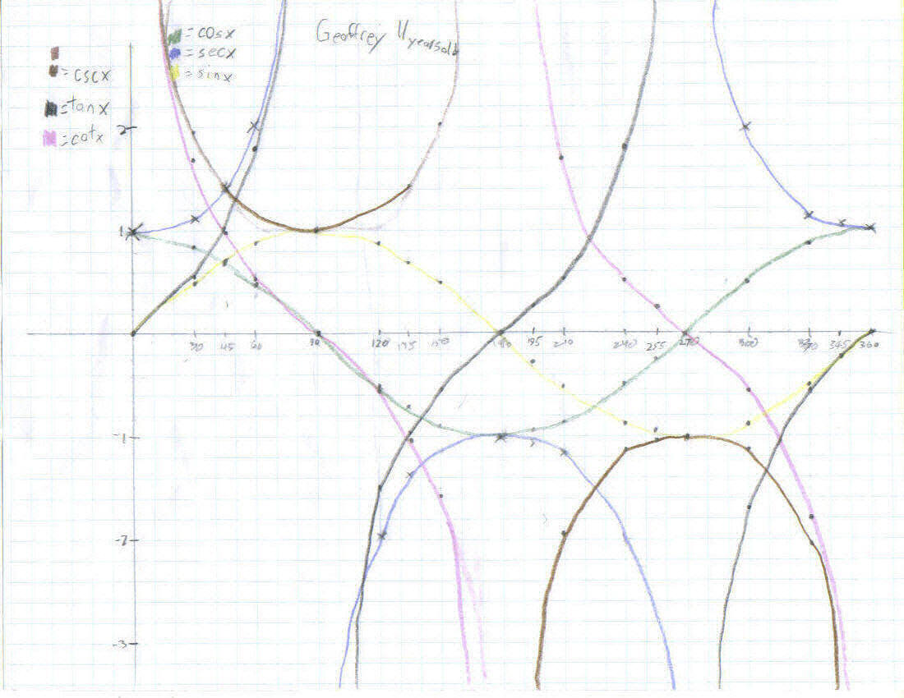

Geoffrey, age 11, graphs the 6 trig functions

Geoffrey did these graphs from taking the data off the IES java applet at
http://www.ies.co.jp/math/java/trig/sixtrigfn/sixtrigfn.html
Back to Patterns in Mathematics
To order
Don's materials
Mathman home